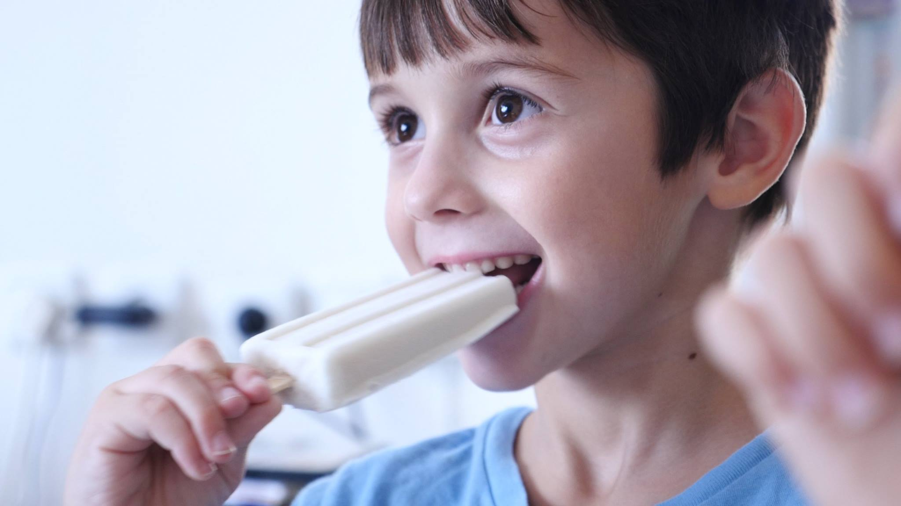

About us
Our Story
Lily pops started out in 2016, when the demand for natural, healthy and quality products was growing. Popsicles are real treats and are loved by kids. The unfortunate thing is that there is no healthy Popsicle in stores, or even a semi-healthy. Commercial Popsicles are mostly a mixture of water, sugar, flavors and food coloring. This is where we come in: the idea for the business started when we could not find a healthy, nutritious Popsicle for our daughter Lily. The cool desert is a personal favor of hers due to lactose intolerance. We wanted to Stick to our beliefs and bring our love of tasty, delicious food together with a passion for health and nutrition. The home-made popsicles we decided to make for her soon became popular by both children and adults and the health benefit were a great bonus.
Our products
Sports pops are the first nutrient dense, 100% all-natural frozen pops in the Israeli market targeting athletes and people leading an active lifestyle - lily pops blends offer nutritional value and functional benefits
Every lily pops all-natural frozen pop is made with the best all-natural, organic and locally sourced ingredients they can find. They use lots of delicious fresh fruit, 100% organic and fair trade cane sugar (organic evaporated cane juice) and nothing artificial, ever. They always make their pops in small batches to ensure that perfect, mouth-watering taste.
Lily pops are mouth-watering all-natural frozen pops. They are produced with the best non-GMO, organic, fair trade and locally sourced ingredients. Lily pops are not only local, they’re lo-cal. lily pops are 40-120 calories and their lily pops power-packed nutritious real food specialty sports pops are 80-150 calories. Lily pops will be the first company in Israel to sell artisan all-natural certified Gluten-free and Certified Vegan Friendly frozen pops, exceeding the needs of consumers following specialized diets.
